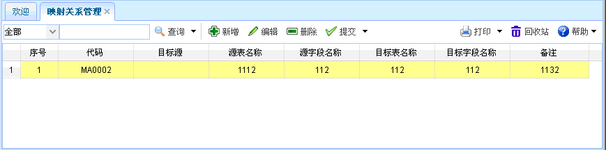
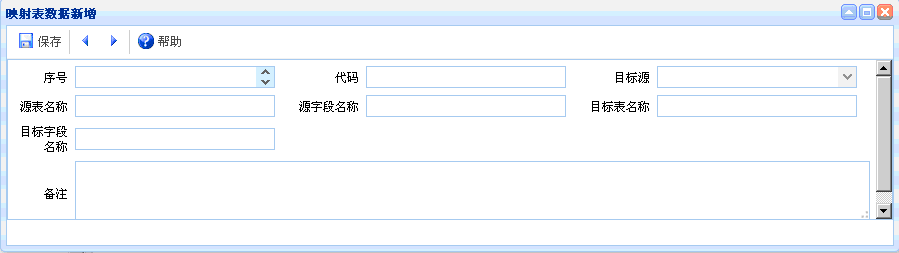
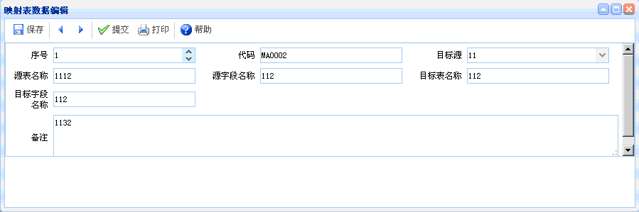

映射关系管理
映射关系管理
概述：主要是管理表与表之间的映射关系。
功能介绍：点击【映射关系管理】进入映射关系管理页面，如下图所示。功能主要包括：查询、新增、编辑、删除、提交。

图表6-x5-1【映射关系管理】
图表6-x5-1【映射关系管理】
【查询】：通过设置查询条件，查询出符合条件的映射关系管理信息。
【新增】：点击新增按钮，如下图所示。新增完毕，点击保存。

图表6-x5-2【映射表数据新增】
图表6-x5-2【映射表数据新增】
【编辑】：选中某项映射关系管理信息，点击编辑按钮后，出现如下图所示内容。进行编辑、提交操作。

图表6-x5-3【映射表数据编辑】
图表6-x5-3【映射表数据编辑】
【删除】：选中映射关系管理信息后，点击删除，即可删除该映射关系管理信息，已提交的不能删除。
【提交】：选中某项映射关系管理信息后，点击提交，可提交该映射关系管理信息，已提交的数据不能再次提交，也可撤消提交。
 注意事项
注意事项
1、提交后的数据不能再次进行编辑，如果需要进行修改，需提交人撤消提交后才能再次进行编辑。
2、
 常见问题
常见问题
1、？
2、？
3、？